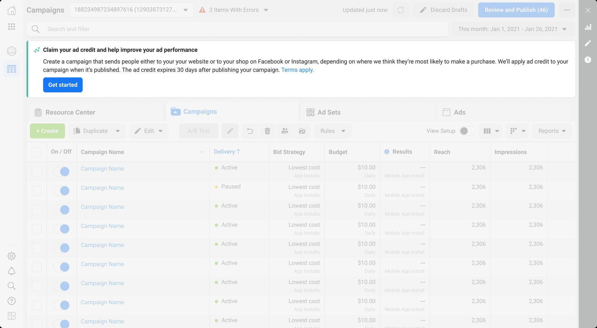
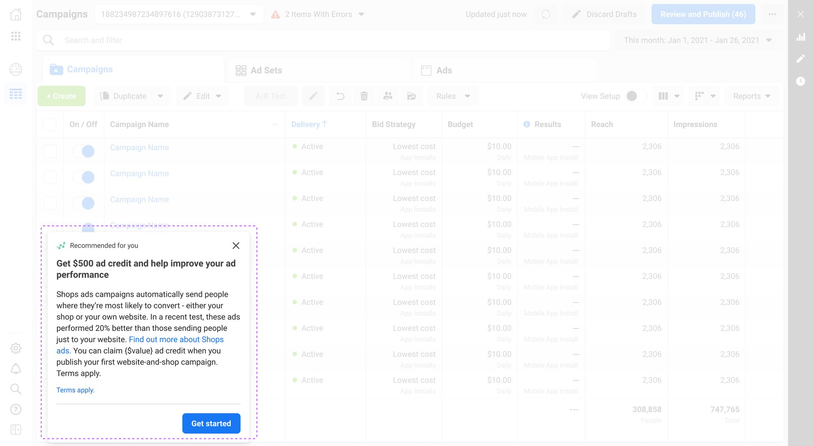
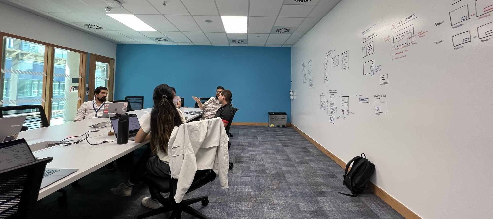
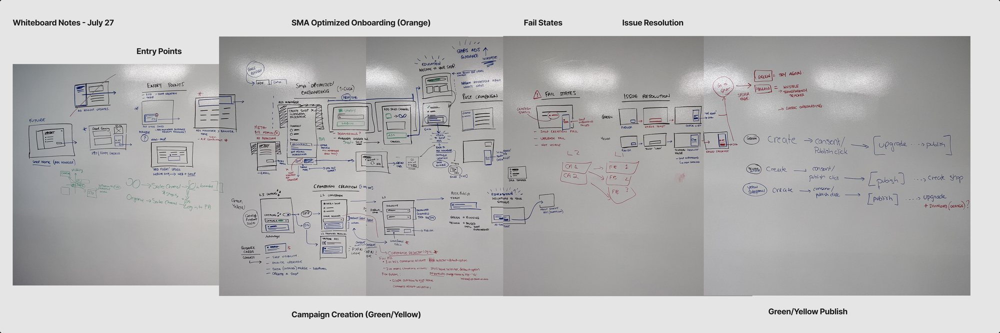
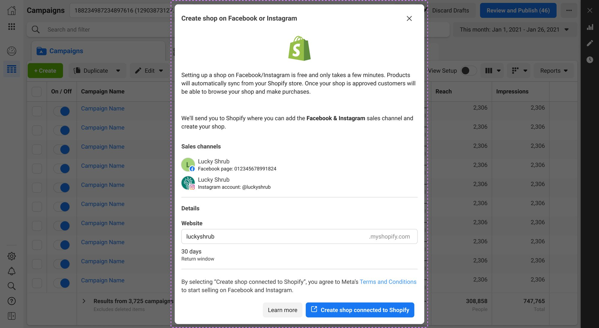
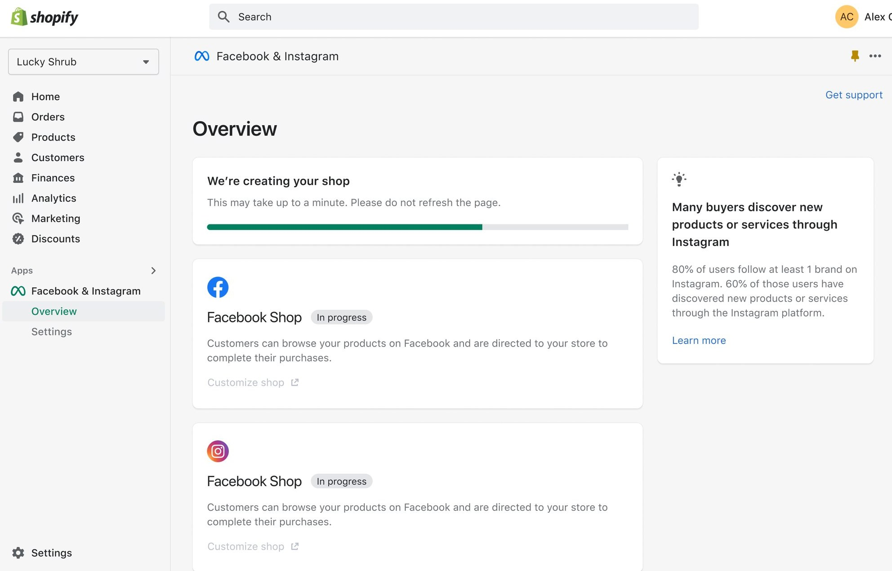
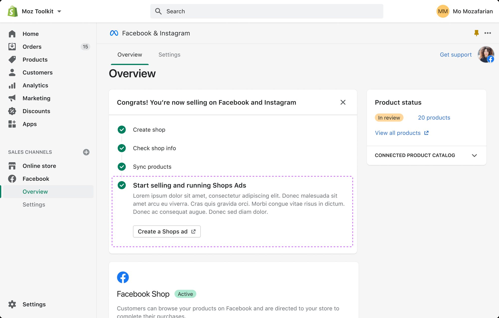

Streamlining Shops onboarding and global stakeholder alignment
As lead product designer for the Shopify Meta App, I led the strategy and design for Shops onboarding in Ads Manager, aligning cross-functional teams across global offices to deliver a unified seller experience.
Overview
As the lead product designer for the Shopify Meta App (SMA), I spearheaded the strategy and design for the Shops Onboarding experience within Ads Manager. This initiative was critical for expanding our Total Addressable Market (TAM) by enabling merchants to seamlessly adopt onsite checkout. My role focused on navigating complex technical constraints and aligning disparate cross-functional (XFN) teams across global offices to deliver a unified seller experience.

The Challenge
Following major organisational shifts, the project faced significant risks due to team misalignment and “blurred lines” regarding project ownership.
- Team misalignment, different pillars had conflicting priorities for how “Orange” and “Green” seller cohorts should be onboarded, leading to a fragmented user journey.
- High ambiguity, I had to manage the design needs for multiple high-impact projects simultaneously while adjusting to new working conditions and reduced content design support.
- Technical complexity, the solution required updated flows across nine different surfaces and three outreach mechanisms (email, AYMT and Shopify Resource Feedback).

Strategic Approach: The London Design Sprint
To resolve the mounting misalignment, I proactively planned and facilitated a 2-day in-person design workshop in London. This was a Staff-level intervention designed to bring stakeholders from across the globe into one room to finalise the product experience.

1. Facilitating stakeholder alignment
- The room where it happened, I led the strategy and design sprint specifically for the “Orange Cohort,” while also providing critical support to the Shops Engagement PDs for the “Green Cohort.”
- Visualising the E2E journey, using FigJam and rapid prototyping, I mapped out the end-to-end targeted onboarding experience, ensuring every XFN partner, from engineering to product, was aligned on the same roadmap.
- Building a working model, I established a new cross-pillar working model that stabilised the team’s momentum and allowed us to deliver milestone 1 and 2 designs under tight deadlines.

2. Design and execution
After the workshop, I turned what we had aligned on in London into something the team could build from. I documented the decisions we had captured on the whiteboard, along with the open questions still to answer, and brought it all together in a high-fidelity prototype in Figma, built from atomic components that scaled across every surface. Both teams could keep commenting on the details, but the core experience was agreed, so engineering could begin execution. The quick turnaround kept the momentum from London and unblocked the team, and my engineering peers highlighted this way of prototyping as “exemplary” for gaining alignment.
Results & Impact
The London workshop and subsequent design execution directly contributed to the team exceeding its H1 onsite adoption targets by a significant margin.
- Conversion success, the optimised onboarding modal saw a dramatic CTR increase from 18% to 30% for targeted cohorts.
- Business growth, these efforts supported the broader Shopify Meta App team in reaching a $8.2B TAM in 2024, exceeding the revised goal of $7.8B.
- Systematic quality, I introduced a “Usability & Craft” bucket in GSD to track and resolve quality issues, serving as the Design POC for numerous feature intakes to ensure the quality bar was never compromised.



Reflection
This project reinforced my belief that design leadership is about more than pixels; it’s about people. By recognising the human friction causing the technical delays and stepping up to lead the London workshop, I was able to transform a period of organisational chaos into a high-performing, aligned engine.